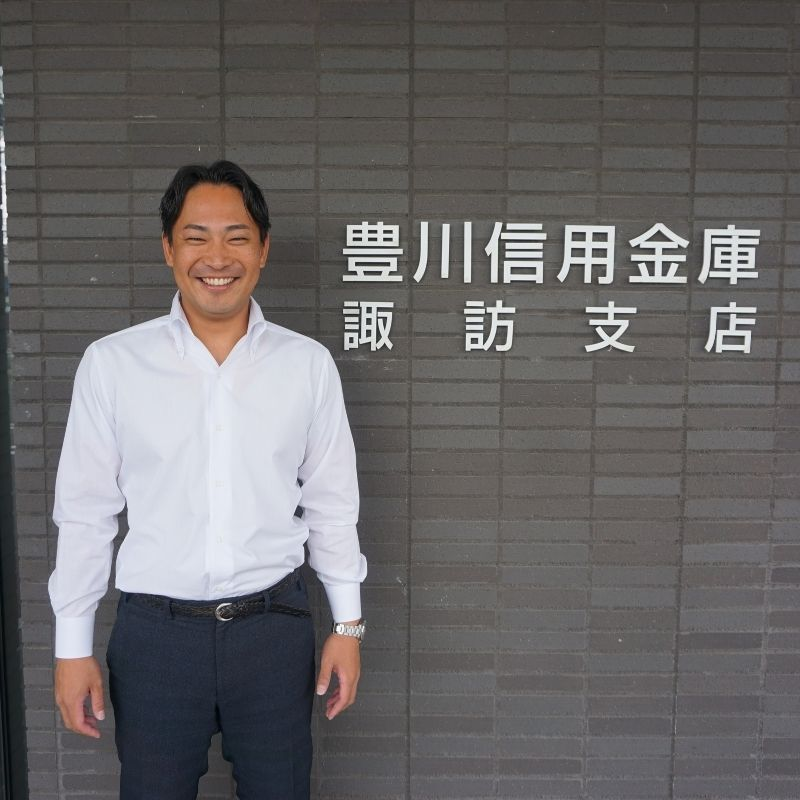
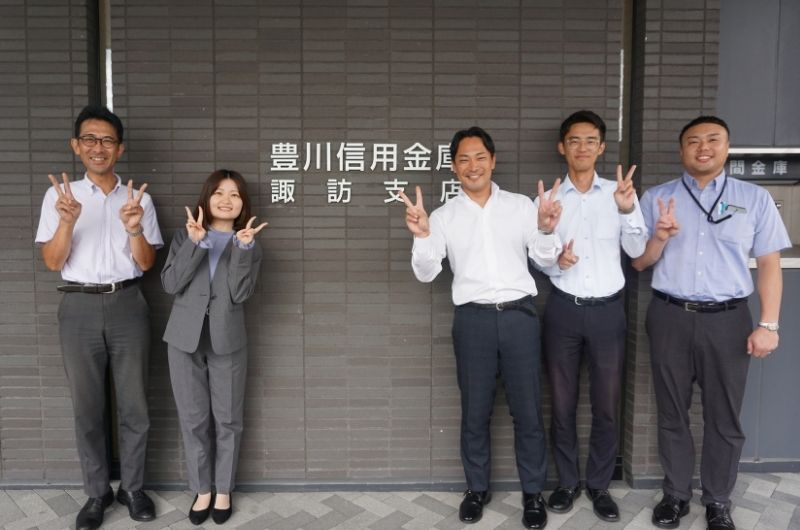
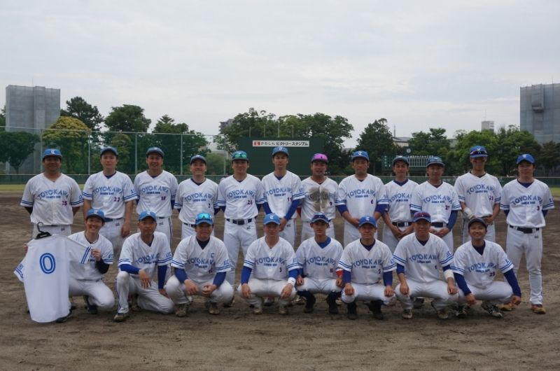

豊川信用金庫
街と共に未来を描く
Recruit
ENTRY
先輩たちの声

渉外課 課長 村井さん
渉外課長として、地域のお客様の暮らしや事業を金融面からサポートしています。 業務を進める中で強く感じるのは、私たちが支える立場でありながら、実はお客様から学ぶことが非常に多いということです。
日々の出会いや経験は、自らの成長につながり、お客様からの感謝の言葉をいただけたときには大きな励みとなっています。

課長として大切にしているのは、自らの背中を見せながら部下と一緒に成長していくことです。
成果が出たときには一緒に喜び、課題に直面したときには一緒に悩む。 その一つひとつの積み重ねで信頼関係が生まれ、部下の成長を応援しながら、自分自身も成長できていると感じています。
これからも一緒に働く仲間と共に笑い、共に泣き、共に成長してきたいと思います。

私は職場の野球部でコーチを務めています。選手をサポートする立場は、普段の仕事での「部下の育成」とも似ている部分があります。
仲間の努力が実を結んだときに一緒に喜び会えるのは最高の瞬間ですし、信頼関係も深まり、自分の指導力を磨く機会になっています。
普段の業務ではなかなか知り合えない先輩、後輩と野球部を通して仲間となり、プライベートでも一緒に楽しめているのは私のかけがえのない財産です。
街と共に未来を描こう！
オープン・カンパニー
豊川信用金庫 人事部
0120-09-2317
担当：人事部（渡辺、浅井、大西）